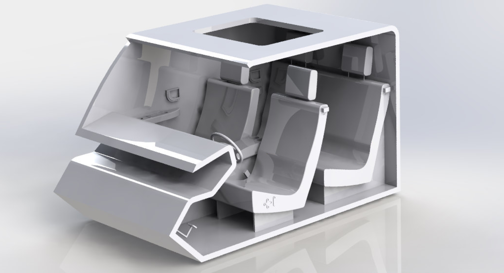
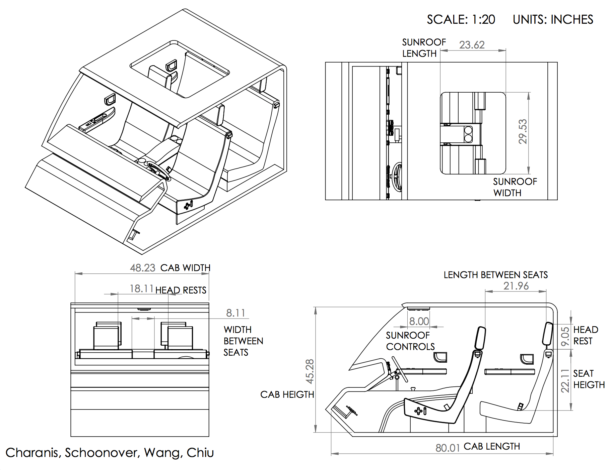
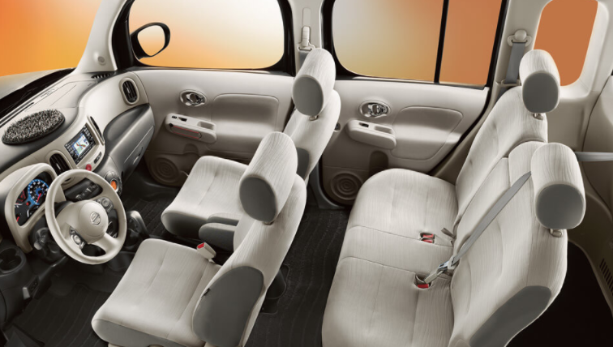

Micro Car Interior
Product Design | Human Factors
This was the final project for my ID 2320: Human Factors in Design class. The task was to create a 3D model of a mini car with given dimensions, accounting for anatomical body segment measurements of the passengers. Our team created diagrams for the car dimensions and dashboard with Adobe Illustrator and a 3D CAD model of the car with Solidworks. The final model was created from foamboard, cardboard, and 3D printed components.
Interior Dimensions
Design Challenges
- There were no provided reference examples for the car model so we had to research pre-existing cars on our own.
- Lack of direction. In the field, designers/engineers usually improve upon existing models or use references, rather than start from scratch. The project was pretty open-ended and we had no guidance in designing the individual components (Eg. steering wheel, seat belts, dashboard controls) so it really challenged our creativity.
Inspiration
The design of our car was heavily influenced by traditional standards seen in most car models today. Not only was it logical to construct designs to what individuals are already familiar with, it was also a great starting point to use designs already successful and popular in the market. To allow the driver and passengers as much room as possible, we gave the car a “boxy” figure so that the occupants inside could have as much vertical space as possible. We researched cars with this “boxy” design and found that the Nissan Cube (pictured left) and the Kia Soul were good models to base our designs off of. Maximizing the vertical space gives the illusion of more room inside the vehicle.
Occupant Models and Measurements
To test and verify things like legroom and head clearance, we first based our occupant measurements off of the sample anthropometric body measurements of humans in the 5th and 95th percentiles so that the car fits both short and tall people comfortably. We laser cut the human models and tried to fit them inside the foam core model of the car that we built. It was a lot of trial and error, but using the physical models to actually test our measurements helped us to ensure that our designs would work in real life.
Dashboard Design
Inspired by the 2008 Toyota Camry. We traced a photo of a Camry's dashboard on Figma to get this vector model.